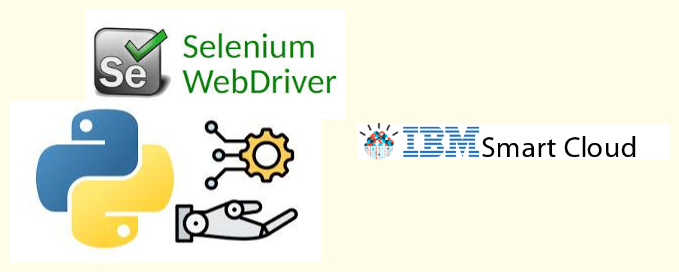

Проекты
Работа с базами данных
-

Универсальный коннектор к базам данных
Введение: Библиотека для подключения к базам данных через JDBC.
Технологии: Python, JDBC, Pandas.
Роль: Разработка библиотеки.
Результаты:
-
Реализация паттерна Singleton:
Обеспечивает повторное использование подключения к базе данных, что снижает потребление ресурсов и предотвращает конфликты в многопоточных приложениях. -
Поддержка нескольких баз данных:
Позволяет выполнять SQL-запросы и получать данные в формате DataFrame pandas, что упрощает работу с различными СУБД.
Итог: Упрощает и ускоряет разработку небольших приложений и скриптов, связанных с подключением к БД и обработкой данных, что положительно влияет на производственный процесс и повышает эффективность разработки.
Демонстрация: Ссылка на проект
-
Реализация паттерна Singleton:
-

Мониторинг качества данных
Введение: Проект нацелен на мониторинг качества данных состояния лицевых счетов, обеспечивая целостность и актуальность данных между мастер-системой и исторической системой.
Технологии: Python, PostgreSQL, psycopg2, nzpy, Pandas, Dash.
Роль: Разработка системы мониторинга для проверки и актуализации данных.
Результаты:
-
Реализован конвейер:
Выгрузка данных из систем источников и загрузка в систему мониторинга. -
Проведение проверок:
Проверка данных между системами и формирование отчетов с результатами, включая визуализацию в виде дашборда.
Итог: Мониторинг качества данных способствует повышению надежности и актуальности информации, что улучшает принятие решений и оптимизирует бизнес-процессы на предприятии.
Демонстрация: Ссылка на проект
-
Реализован конвейер:
-

ETL-процесс для витрины данных на PostgreSQL
Введение: Проект нацелен на создание витрины данных для оптимизации извлечения данных из таблицы act_hi_detail ПО Camunda.
Технологии: PostgreSQL, Python, Pandas, psycopg2.
Роль: Разработка ETL-процесса для эффективной обработки данных.
Результаты:
-
Реализован ETL-процесс:
Оптимизировано извлечение данных из БД PostgreSQL, обработка этих данных с использованием Pandas и загрузка в другую БД PostgreSQL, которая будет служить в качестве витрины данных.
Итог: Снижена нагрузка на продуктовую базу данных Camunda, создана витрина данных, используемая для аудита и мониторинга бизнес-процессов предприятия.
Демонстрация: Ссылка на проект
-
Реализован ETL-процесс:
-

Специфика работы с Netezza
Введение: Проект нацелен на изучение архитектуры Netezza, особенностей организации данных, методов мониторинга и оптимизации запросов.
Технологии: Netezza, SQL, Python, Faker, Pandas.
Роль: Разработка тестовых таблиц и методов оптимизации запросов.
Результаты:
-
Создание тестовых таблиц:
Проверка распределения данных по сегментам. -
Рассмотрены встроенные инструменты мониторинга:
Использование системных представлений и команд для анализа выполнения запросов и выявления перекосов данных. -
Изучены методы оптимизации запросов:
Применение ключей распределения и организации для повышения производительности.
Итог: Полученные знания позволяют повысить производительность обработки данных и улучшают эффективность выполнения запросов, что критически важно для аналитических задач.
Демонстрация: Ссылка на проект
-
Создание тестовых таблиц:
-

Специфика работы с Greenplum
Введение: Проект нацелен на изучение архитектуры Greenplum, особенностей хранения данных, методов сжатия, распределения данных по сегментам, использования встроенных инструментов мониторинга и методов оптимизации запросов.
Технологии: Greenplum, SQL, Python, PXF.
Роль: Анализ и оптимизация работы с данными в Greenplum.
Результаты:
-
Создание тестовых таблиц:
Проверка распределения данных по сегментам. -
Рассмотрены встроенные инструменты мониторинга:
Использование системных представлений и команд для анализа выполнения запросов. -
Изучены методы оптимизации запросов:
Применение различных методов для повышения производительности обработки данных. -
Рассмотрен и изучен фреймворк PXF:
Интеграция данных из различных источников и оптимизация работы с ними.
Итог: Полученные знания позволяют повысить производительность обработки данных и улучшают эффективность выполнения запросов, что критически важно для аналитических задач.
Демонстрация: Ссылка на проект
-
Создание тестовых таблиц:
Работа с REST-API
-

REST API Tool
Введение: Библиотека на Python для работы с REST API, поддерживающая аутентификацию, операции с файлами.
Технологии: Python, REST API, Requests.
Роль: Разработка библиотеки.
Результаты:
-
Поддержка всех HTTP методов:
Реализована поддержка методов GET, POST, PUT, PATCH, DELETE для работы с API. -
Гибкая аутентификация:
Реализована поддержка различных методов аутентификации, включая Bearer, Basic и API ключи. -
Загрузка/скачивание файлов:
Возможность работы с файлами через API, включая их загрузку и скачивание.
Итог: Библиотека упрощает и ускоряет разработку приложений, связанных с интеграцией REST API, что положительно влияет на производственный процесс и повышает эффективность разработки.
Демонстрация: Ссылка на проект
-
Поддержка всех HTTP методов:
-

WebHDFS Клиент
Введение: Клиент WebHDFS для Python, использующий пользовательский инструмент API для работы с HDFS.
Технологии: Python, HDFS.
Роль: Разработка клиента для выполнения операций с HDFS.
Результаты:
-
Поддержка основных операций с HDFS:
Реализованы операции создания директорий, загрузки и чтения файлов, удаления и переименования. -
Получение метаданных:
Возможность получения метаданных файлов и директорий для удобства работы.
Итог: Клиент упрощает взаимодействие с HDFS, обеспечивая удобный интерфейс для выполнения операций и управления данными.
Демонстрация: Ссылка на проект
-
Поддержка основных операций с HDFS:
Работа с брокером сообщений
-

Resender
Введение: Flask-приложение для генерации и отправки сообщений (XML, JSON) в брокер сообщений IBM MQ из различных источников данных.
Технологии: Python, Flask, IBM MQ, REST API.
Роль: Разработка приложения для генерации и отправки сообщений.
Результаты:
- Интуитивно понятный интерфейс для пользователей.
- Админская-панель для управления пользователями и процессами.
- Обеспечен модульный подход, позволяющий расширять и встраивать новые виды процессов в зависимости от возникающих потребностей предприятия.
Итог: Приложение предоставляет удобный интерфейс и служит инструментом по устранению инцидентов при взаимодействии различных подсистем и процессов, возникающих после технических сбоев и аварий.
Демонстрация: Ссылка на проект
Автоматизация
-

RPA-скрипт для приема заявок в системе IBM SmartCloud Control Desk
Введение: Скрипт автоматизирует извлечение данных о рабочих заданиях из IBM SmartCloud Control Desk и их сохранение в Excel для дальнейшей обработки.
Технологии: Python, Selenium, BeautifulSoup.
Роль: Разработка скрипта для автоматизации процессов.
Результаты:
- Автоматизация процесса приема заявок из системы в работу, что значительно ускоряет обработку.
- Учет принятых заявок в Excel, что упрощает дальнейшую обработку и отчетность.
Итог: Скрипт существенно снижает трудозатраты по приему заявок, что позволяет исполнять регламенты и сроки, улучшая общую эффективность работы с заявками.
Демонстрация: Ссылка на проект
Учебные проекты
-
Анализ данных с использованием PySpark и ClickHouse
Введение: Проект нацелен на анализ данных об объектах недвижимости с использованием PySpark и ClickHouse, организованный с помощью Apache Airflow.
Технологии: PySpark, ClickHouse, Apache Airflow, Docker.
Роль: Разработка автоматизированного пайплайна для обработки и анализа данных.
Результаты:
- Загрузка данных из CSV файла в DataFrame PySpark и проверка их корректности.
- Преобразование текстовых и числовых полей в соответствующие типы данных.
- Вычисление среднего и медианного года постройки зданий.
- Определение топ-10 областей и городов с наибольшим количеством объектов.
- Загрузка обработанных данных в ClickHouse и выполнение SQL-запросов для анализа.
Итог: Проект обеспечивает эффективный процесс анализа данных об объектах недвижимости, позволяя получать полезную информацию о зданиях и их характеристиках.
Демонстрация: Ссылка на проект
-

Анализ данных с использованием PySpark и PostgreSQL
Введение: Проект нацелен на обработку данных о полетах с использованием Apache Airflow и PySpark.
Технологии: PySpark, PostgreSQL, Apache Airflow, Docker.
Роль: Разработка автоматизированного пайплайна для обработки и анализа данных.
Результаты:
- Загрузка данных из CSV файла в DataFrame PySpark и проверка их корректности.
- Преобразование данных в нужные форматы и добавление новых столбцов для анализа.
- Анализ данных, включая нахождение топ-5 авиалиний с наибольшей средней задержкой и вычисление процента отмененных рейсов.
- Загрузка очищенных данных в PostgreSQL и выполнение аналитических операций.
Итог: Проект обеспечивает надежный и эффективный процесс обработки данных о полетах, позволяя получать полезную информацию и проводить анализ задержек и отмен рейсов.
Демонстрация: Ссылка на проект
-

Анализ данных с использованием PySpark, PostgreSQL, ClickHouse и Grafana
Введение: Проект нацелен на создание конвейера обработки данных для анализа продаж.
Технологии: PySpark, PostgreSQL, ClickHouse, Grafana, Apache Airflow, Docker.
Роль: Разработка автоматизированного пайплайна для обработки и анализа данных.
Результаты:
- Генерация реалистичных данных о 1 миллионе продаж за последний год.
- Очистка и предобработка данных, включая удаление дубликатов.
- Загрузка очищенных данных в PostgreSQL и выполнение аналитических операций.
- Перенос агрегированных данных в ClickHouse для быстрого анализа.
Итог: Проект обеспечивает надежный и эффективный процесс обработки данных, позволяя получать полезную информацию о продажах и визуализировать ее в Grafana.
Демонстрация: Ссылка на проект
Pet-проекты
-

КиноСмотрители
Введение: Веб-приложение для обмена информацией о просмотренных фильмах, разработанное с использованием Django и MySQL.
Технологии: Python, Django, MySQL, REST-API, OAuth
Роль: Разработка Django-приложения.
Результаты:
- Аутентификация в приложении с использованием OAuth через сервисы Yandex, Google.
- Обеспечен доступ к информации о том, кто из сообщества и какие проводил активности с фильмами или списками.
- Интеграция с API Telegram для отправки пользователям различной вида рассылок по фильмам и спискам.
- Пользователи могут вести личные списки фильмов и получать информацию о просмотренных фильмах.
- Учёт активностей пользователей, ведения рейтинга.
- Реализована возможность получения рекомендаций о кинопремьерах.
Итог: Приложение предоставляет пользователям удобный интерфейс для того, чтобы делиться своими впечатлениями о фильмах, находить новые интересные ленты и взаимодействовать с единомышленниками. Кроме того, пользователи получают полезные рассылки с актуальной информацией о новых фильмах и персонализированные рекомендации, что делает процесс выбора фильмов более увлекательным и информативным.
Демонстрация:
Ссылка на проект
Развернутое приложение -

HH API Приложение
Введение: Проект направлен на создание приложения для аналитики вакансий на основе поисковых запросов пользователей.
Технологии: Python, Flask, MySQL, REST-API, Grafana.
Роль: Разработка Flask-приложения для сбора, анализа и визуализации данных о вакансиях.
Результаты:
-
Отправка заявок:
Пользователи могут отправлять заявки на сбор данных по ключевым словам. -
Управление запросами:
Возможность просмотра и управления поисковыми запросами через админский дашборд. -
Уведомления:
Получение уведомлений о новых вакансиях. -
Визуализация:
Аналитическая информация представлена в виде дашбордов Grafana.
Итог: Приложение предоставляет пользователям удобный доступ к аналитической информации о вакансиях, что способствует более эффективному поиску работы.
Демонстрация:
Ссылка на проект
Развернутое приложение -
Отправка заявок: